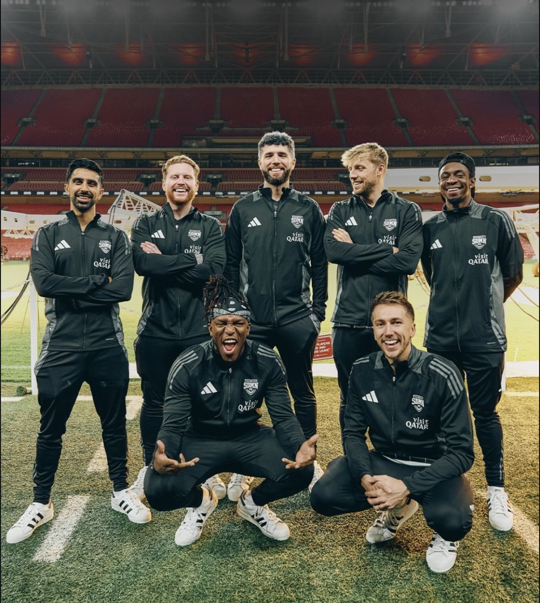
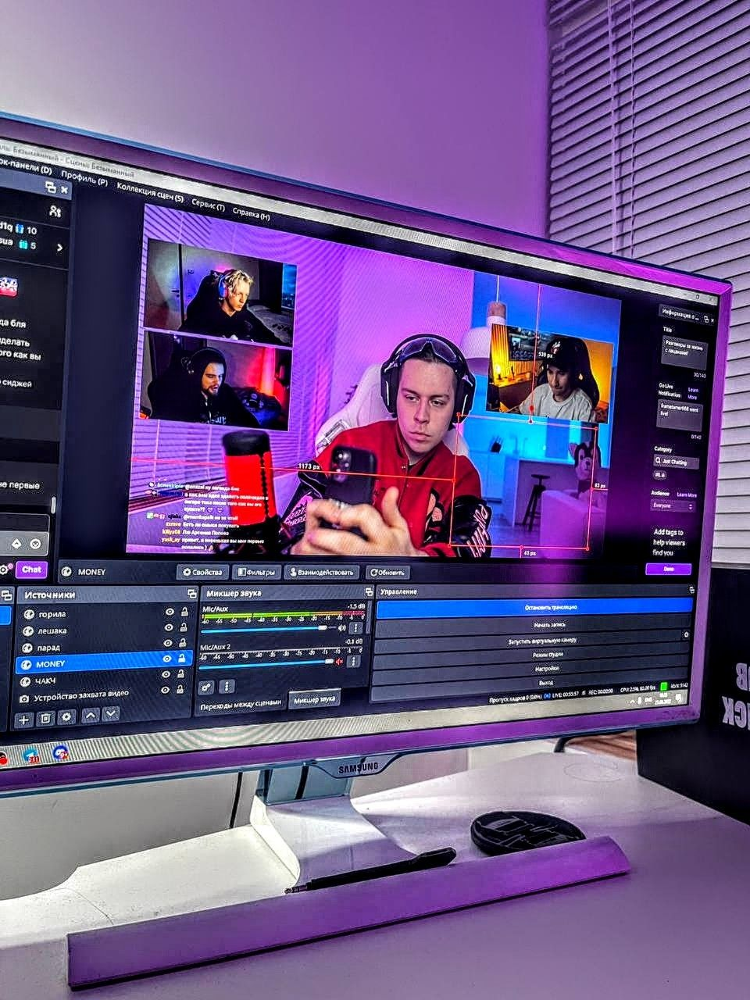
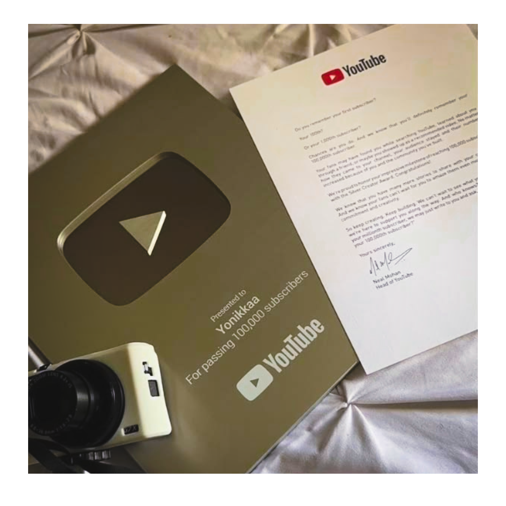
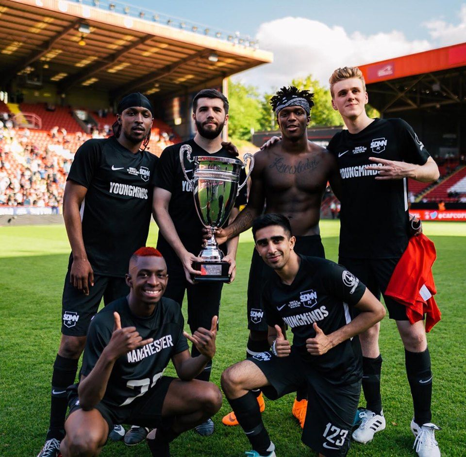

Sidemen Charity Match 2026
The Sidemen Charity Match has become one of the biggest influencer sporting events in the world since it first began in 2016. Created by the British YouTube group known as the Sidemen, the event combines entertainment, football, and charity by bringing together popular YouTubers, streamers, and influencers to compete in front of thousands of fans. What started as a small online creator match has grown into a sold-out event at Wembley Stadium, raising millions of pounds for charity while attracting millions of viewers worldwide. The 2026 match continued this tradition with record-breaking donations, viral moments, and an unforgettable atmosphere that showed the power of online communities coming together for a good cause.
The charity match has also become a reflection of how much internet culture has evolved over the last decade. What began as a simple YouTube football game between creators has transformed into a worldwide event followed by millions of fans across social media platforms. From livestream clips and fan edits to sold-out stadium crowds, the event demonstrates how online creators are now capable of building entertainment experiences that rival traditional sports and media industries.

Streaming Takes Over Entertainment
Livestreaming has changed the way people watch content. From marathon streams to real-time audience interaction, creators are turning platforms like Twitch, Kick, and YouTube Live into the future of entertainment.

Is Short Form Content Hurting Us?
Platforms like TikTok, Instagram Reels, and YouTube Shorts have completely changed the way people consume content online. While short videos are fast, entertaining, and easy to watch, many people are beginning to question how they affect attention spans and focus.

YouTube Then vs. Now
YouTube has evolved from simple homemade videos into one of the biggest entertainment platforms in the world. As creators adapt to new trends and algorithms, the platform continues to reshape internet culture.

The Sidemen Evolution
What began as a group of friends making FIFA videos and gaming content has grown into one of the biggest creator groups in the world. Through YouTube videos, live events, merchandise, and Charity Match, the group has helped shape modern internet culture while building a global community of millions of fans.

New Gen Celebrities
Content creators are changing what fame looks like in the digital age. Instead of becoming famous through movies, music, or television, influencers are building massive audiences through YouTube videos, livestreams, and social media, creating a new generation of internet celebrities followed by millions around the world.